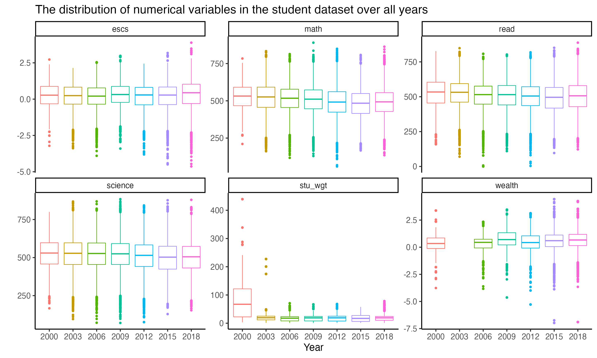
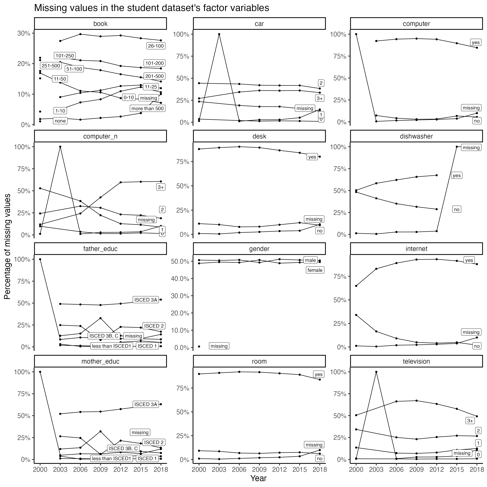
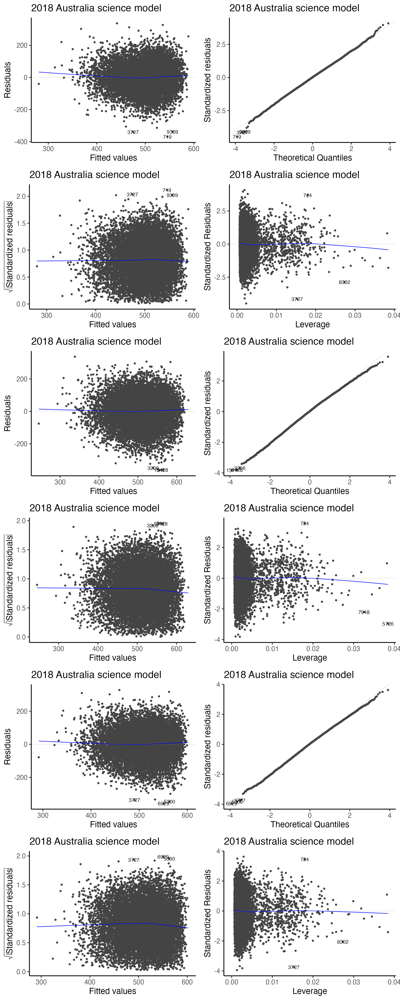
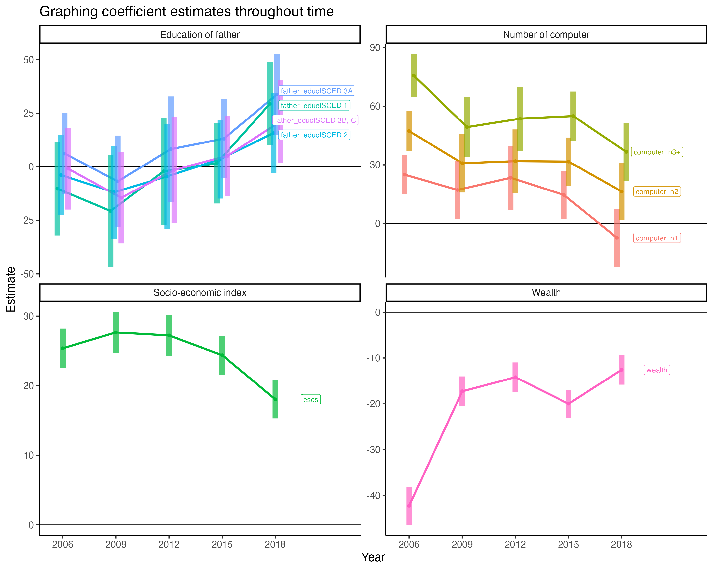

vignettes/articles/Australia_trends.Rmd
Australia_trends.RmdThe purpose of this vignette is to explore some of the variables that influenced Australia’s performance in PISA study. Note that this is an observational study (as oppose to controlled experiment), and we are inferring on factors that are correlated with academic performance rather than specific causes.
Since we are expecting some time variations in the data, we will quickly visualize the time trends.
aus_data = student %>%
dplyr::filter(country %in% c("AUS")) %>%
dplyr::mutate(
mother_educ = mother_educ %>% fct_relevel("less than ISCED1"),
father_educ = father_educ %>% fct_relevel("less than ISCED1"))For numeric variables, we will visualise the numeric distribution across the years via boxplots.
aus_data %>%
select(where(is.numeric)) %>%
bind_cols(aus_data %>% select(year)) %>%
pivot_longer(cols = -year) %>%
ggplot(aes(x = year, y = value,
colour = year)) +
geom_boxplot() +
facet_wrap(~name, scales = "free_y") +
theme(legend.position = "none") +
labs(x = "Year",
y = "")
For factor variables, we will visualise the number of missing values across the years.
aus_fct_plotdata = aus_data %>%
select(where(is.factor)) %>%
dplyr::select(-country, -school_id, -student_id) %>%
pivot_longer(cols = -year) %>%
group_by(year, name, value) %>%
tally() %>%
dplyr::mutate(
value = coalesce(value, "missing"),
percent = n/sum(n),
year = year %>% as.character() %>% as.integer()) %>%
group_by(name, value) %>%
dplyr::mutate(last_point = ifelse(year == max(year), as.character(value), NA))
aus_fct_plotdata %>%
ggplot(aes(x = year, y = percent,
label = last_point,
group = value)) +
geom_point() +
geom_line() +
geom_label_repel(direction = "both", nudge_x = 3, seed = 2020, segment.size = 0) +
facet_wrap(~name, scales = "free_y", ncol = 3) +
scale_x_continuous(breaks = c(2000, 2003, 2006, 2009, 2012, 2015, 2018)) +
scale_y_continuous(labels = scales::percent) +
labs(x = "Year",
y = "Percentage of missing values")
Due to the amount of missing values in the data in the earlier years and also to reduce the time complexity in modelling, we will first explore the most recent 2018 data before generalising the models/results into any trends.
We will first perform a preliminary exploration of the data using linear regression models. We will first fit three linear models (one for each subject of maths, reading and science) on the 2018 Australian data to get a sense of the main variables that may be influencing test scores.
We will subset the student data to only AUS and relevel some factors for analyses later.
student_predictors = c("mother_educ", "father_educ", "gender", "internet", "desk", "room", "television", "computer_n", "car", "book", "wealth", "escs")
student_formula_rhs = paste(student_predictors, collapse = "+")
aus2018 = aus_data %>%
filter(year == "2018") %>%
dplyr::select(
math, read, science,
all_of(student_predictors)) %>%
na.omit()
cat("Correlation matrix of the numeric variables")
#> Correlation matrix of the numeric variables
aus2018 %>%
select(where(is.numeric)) %>%
cor(use = "pairwise.complete.obs") %>%
round(2)
#> math read science wealth escs
#> math 1.00 0.78 0.84 0.07 0.33
#> read 0.78 1.00 0.84 0.03 0.32
#> science 0.84 0.84 1.00 0.03 0.31
#> wealth 0.07 0.03 0.03 1.00 0.47
#> escs 0.33 0.32 0.31 0.47 1.00
aus2018_math = lm(formula = as.formula(paste("math ~ ", student_formula_rhs)) , data = aus2018)
aus2018_read = lm(formula = as.formula(paste("read ~ ", student_formula_rhs)) , data = aus2018)
aus2018_science = lm(formula = as.formula(paste("science ~ ", student_formula_rhs)) , data = aus2018)
sjPlot::tab_model(aus2018_math, aus2018_read, aus2018_science,
show.ci = FALSE, show.aic = TRUE, show.se = TRUE,
show.stat = TRUE,
show.obs = FALSE)| math | read | science | ||||||||||
|---|---|---|---|---|---|---|---|---|---|---|---|---|
| Predictors | Estimates | std. Error | Statistic | p | Estimates | std. Error | Statistic | p | Estimates | std. Error | Statistic | p |
| (Intercept) | 330.18 | 16.51 | 20.00 | <0.001 | 280.37 | 18.97 | 14.78 | <0.001 | 318.64 | 18.14 | 17.57 | <0.001 |
| mother_educ [ISCED 1] | 2.32 | 10.19 | 0.23 | 0.820 | 8.95 | 11.71 | 0.76 | 0.445 | 5.81 | 11.20 | 0.52 | 0.604 |
| mother_educ [ISCED 2] | 2.09 | 9.73 | 0.22 | 0.830 | 13.32 | 11.18 | 1.19 | 0.234 | 7.28 | 10.69 | 0.68 | 0.496 |
| mother_educ [ISCED 3A] | 11.16 | 9.64 | 1.16 | 0.247 | 19.23 | 11.07 | 1.74 | 0.083 | 12.30 | 10.59 | 1.16 | 0.245 |
| mother_educ [ISCED 3B, C] | -1.86 | 9.92 | -0.19 | 0.851 | 4.58 | 11.40 | 0.40 | 0.688 | -1.63 | 10.90 | -0.15 | 0.881 |
| father_educ [ISCED 1] | 29.39 | 9.70 | 3.03 | 0.002 | 28.79 | 11.15 | 2.58 | 0.010 | 10.65 | 10.66 | 1.00 | 0.318 |
| father_educ [ISCED 2] | 15.71 | 9.42 | 1.67 | 0.095 | 23.47 | 10.82 | 2.17 | 0.030 | 20.42 | 10.34 | 1.97 | 0.048 |
| father_educ [ISCED 3A] | 33.76 | 9.38 | 3.60 | <0.001 | 39.37 | 10.78 | 3.65 | <0.001 | 32.32 | 10.31 | 3.14 | 0.002 |
| father_educ [ISCED 3B, C] | 21.18 | 9.61 | 2.20 | 0.028 | 29.69 | 11.05 | 2.69 | 0.007 | 22.12 | 10.56 | 2.09 | 0.036 |
| gender [male] | 10.14 | 1.59 | 6.40 | <0.001 | -24.94 | 1.82 | -13.69 | <0.001 | 9.69 | 1.74 | 5.56 | <0.001 |
| internet [yes] | 33.83 | 6.06 | 5.58 | <0.001 | 38.44 | 6.97 | 5.52 | <0.001 | 35.63 | 6.66 | 5.35 | <0.001 |
| desk [yes] | 16.69 | 2.76 | 6.05 | <0.001 | 17.39 | 3.17 | 5.49 | <0.001 | 15.96 | 3.03 | 5.27 | <0.001 |
| room [yes] | 9.05 | 3.23 | 2.80 | 0.005 | 4.95 | 3.72 | 1.33 | 0.183 | 4.35 | 3.55 | 1.22 | 0.221 |
| television [1] | 19.18 | 8.95 | 2.14 | 0.032 | 29.02 | 10.29 | 2.82 | 0.005 | 24.39 | 9.84 | 2.48 | 0.013 |
| television [2] | 9.83 | 8.90 | 1.10 | 0.269 | 27.33 | 10.23 | 2.67 | 0.008 | 21.53 | 9.78 | 2.20 | 0.028 |
| television [3+] | -3.70 | 8.96 | -0.41 | 0.680 | 15.37 | 10.30 | 1.49 | 0.136 | 5.26 | 9.85 | 0.53 | 0.594 |
| computer_n [1] | -7.33 | 7.41 | -0.99 | 0.322 | 9.07 | 8.51 | 1.07 | 0.287 | -1.17 | 8.14 | -0.14 | 0.886 |
| computer_n [2] | 16.39 | 7.33 | 2.24 | 0.025 | 36.30 | 8.42 | 4.31 | <0.001 | 25.57 | 8.05 | 3.18 | 0.001 |
| computer_n [3+] | 36.64 | 7.44 | 4.92 | <0.001 | 55.45 | 8.55 | 6.48 | <0.001 | 37.14 | 8.18 | 4.54 | <0.001 |
| car [1] | 6.69 | 8.41 | 0.80 | 0.426 | 26.09 | 9.66 | 2.70 | 0.007 | 12.68 | 9.24 | 1.37 | 0.170 |
| car [2] | 15.90 | 8.40 | 1.89 | 0.058 | 34.54 | 9.66 | 3.58 | <0.001 | 19.75 | 9.23 | 2.14 | 0.032 |
| car [3+] | 6.93 | 8.56 | 0.81 | 0.418 | 22.60 | 9.84 | 2.30 | 0.022 | 9.19 | 9.41 | 0.98 | 0.328 |
| book101-200 | 34.36 | 3.11 | 11.03 | <0.001 | 58.51 | 3.58 | 16.34 | <0.001 | 53.46 | 3.42 | 15.62 | <0.001 |
| book11-25 | 10.24 | 3.25 | 3.15 | 0.002 | 12.32 | 3.74 | 3.29 | 0.001 | 6.75 | 3.58 | 1.89 | 0.059 |
| book201-500 | 48.97 | 3.32 | 14.73 | <0.001 | 74.83 | 3.82 | 19.59 | <0.001 | 69.20 | 3.65 | 18.95 | <0.001 |
| book26-100 | 31.12 | 2.87 | 10.83 | <0.001 | 45.04 | 3.30 | 13.64 | <0.001 | 40.73 | 3.16 | 12.90 | <0.001 |
| book [more than 500] | 33.30 | 3.89 | 8.57 | <0.001 | 66.07 | 4.47 | 14.79 | <0.001 | 60.88 | 4.27 | 14.26 | <0.001 |
| wealth | -12.57 | 1.61 | -7.80 | <0.001 | -21.05 | 1.85 | -11.37 | <0.001 | -15.44 | 1.77 | -8.72 | <0.001 |
| escs | 18.05 | 1.37 | 13.14 | <0.001 | 20.15 | 1.58 | 12.77 | <0.001 | 17.05 | 1.51 | 11.30 | <0.001 |
| R2 / R2 adjusted | 0.196 / 0.194 | 0.223 / 0.221 | 0.192 / 0.190 | |||||||||
| AIC | 129529.762 | 132618.597 | 131619.367 | |||||||||
Some interesting discoveries from these models:
father_educ) seems to have a much stronger effect than mother’s education level (mother_educ).gender, where girls tend to perform better than boys in reading.escs) and education (book). A number of variables that should not be directly causal to academic performance also showed up as significant. This is likely due to their associations with socio-economic status.Upon checking the classical diagnostic plots of these models, we see no major violation on the assumptions of linear models. The large amount of variations in the data may help to explain why the models only has a moderately low \(R^2\) values (~ 0.20).
autoplot(aus2018_math) + labs(title = "2018 Australia maths model") +
autoplot(aus2018_read) + labs(title = "2018 Australia read model") +
autoplot(aus2018_science) + labs(title = "2018 Australia science model")
We already know that the socio-economic status (SES) of a student is often the most influential predictor and it is likely that students with similar SES will attend the same schools in their neighborhood and receive similar level of quality of education from the same teachers. Thus, it is likely that there will be a grouping effect on the students if they attended the same school. This would imply that some observations in our data are not independent observations.
By building random effects in our linear model, i.e. building a linear mixed model, we should be able to produce a model with better fit if we consider this grouping effect of schools into our model.
lmm2018 = aus_data %>%
filter(year == "2018") %>%
select(
school_id,
math, read, science,
all_of(student_predictors)) %>%
na.omit()
lmm2018_math = lmer(formula = as.formula(paste("math ~ ", student_formula_rhs, "+ (escs | school_id)")), data = lmm2018)
lmm2018_read = lmer(formula = as.formula(paste("read ~ ", student_formula_rhs, "+ (escs | school_id)")), data = lmm2018)
lmm2018_science = lmer(formula = as.formula(paste("science ~ ", student_formula_rhs, "+ (escs | school_id)")), data = lmm2018)
sjPlot::tab_model(lmm2018_math, lmm2018_read, lmm2018_science,
show.ci = FALSE, show.aic = TRUE, show.se = TRUE,
show.stat = TRUE,
show.obs = FALSE)| math | read | science | ||||||||||
|---|---|---|---|---|---|---|---|---|---|---|---|---|
| Predictors | Estimates | std. Error | Statistic | p | Estimates | std. Error | Statistic | p | Estimates | std. Error | Statistic | p |
| (Intercept) | 317.19 | 16.19 | 19.59 | <0.001 | 266.75 | 18.94 | 14.08 | <0.001 | 304.84 | 17.84 | 17.09 | <0.001 |
| mother_educ [ISCED 1] | 7.61 | 9.82 | 0.78 | 0.438 | 14.29 | 11.52 | 1.24 | 0.215 | 12.98 | 10.84 | 1.20 | 0.231 |
| mother_educ [ISCED 2] | 10.68 | 9.40 | 1.14 | 0.256 | 21.22 | 11.03 | 1.92 | 0.054 | 16.21 | 10.38 | 1.56 | 0.118 |
| mother_educ [ISCED 3A] | 18.21 | 9.30 | 1.96 | 0.050 | 25.87 | 10.91 | 2.37 | 0.018 | 19.81 | 10.27 | 1.93 | 0.054 |
| mother_educ [ISCED 3B, C] | 8.24 | 9.57 | 0.86 | 0.389 | 13.83 | 11.23 | 1.23 | 0.218 | 9.00 | 10.57 | 0.85 | 0.394 |
| father_educ [ISCED 1] | 32.51 | 9.37 | 3.47 | 0.001 | 31.61 | 10.99 | 2.88 | 0.004 | 13.03 | 10.34 | 1.26 | 0.208 |
| father_educ [ISCED 2] | 19.96 | 9.09 | 2.20 | 0.028 | 27.17 | 10.66 | 2.55 | 0.011 | 23.40 | 10.03 | 2.33 | 0.020 |
| father_educ [ISCED 3A] | 33.61 | 9.06 | 3.71 | <0.001 | 39.91 | 10.62 | 3.76 | <0.001 | 31.94 | 9.99 | 3.20 | 0.001 |
| father_educ [ISCED 3B, C] | 25.74 | 9.28 | 2.77 | 0.006 | 33.08 | 10.88 | 3.04 | 0.002 | 25.04 | 10.24 | 2.45 | 0.014 |
| gender [male] | 9.18 | 1.60 | 5.72 | <0.001 | -24.99 | 1.87 | -13.39 | <0.001 | 9.07 | 1.77 | 5.12 | <0.001 |
| internet [yes] | 32.45 | 5.82 | 5.58 | <0.001 | 37.57 | 6.83 | 5.50 | <0.001 | 34.95 | 6.44 | 5.43 | <0.001 |
| desk [yes] | 15.48 | 2.63 | 5.88 | <0.001 | 17.09 | 3.09 | 5.53 | <0.001 | 15.08 | 2.91 | 5.18 | <0.001 |
| room [yes] | 8.17 | 3.11 | 2.62 | 0.009 | 4.11 | 3.65 | 1.13 | 0.260 | 3.53 | 3.45 | 1.02 | 0.306 |
| television [1] | 18.13 | 8.85 | 2.05 | 0.040 | 30.01 | 10.30 | 2.91 | 0.004 | 26.04 | 9.77 | 2.67 | 0.008 |
| television [2] | 11.70 | 8.81 | 1.33 | 0.184 | 29.95 | 10.25 | 2.92 | 0.003 | 25.34 | 9.73 | 2.61 | 0.009 |
| television [3+] | 2.05 | 8.88 | 0.23 | 0.818 | 21.04 | 10.33 | 2.04 | 0.042 | 12.87 | 9.80 | 1.31 | 0.189 |
| computer_n [1] | -3.56 | 7.12 | -0.50 | 0.617 | 12.52 | 8.36 | 1.50 | 0.134 | 2.16 | 7.87 | 0.27 | 0.784 |
| computer_n [2] | 20.74 | 7.07 | 2.93 | 0.003 | 40.11 | 8.30 | 4.83 | <0.001 | 28.73 | 7.81 | 3.68 | <0.001 |
| computer_n [3+] | 40.27 | 7.19 | 5.60 | <0.001 | 59.13 | 8.44 | 7.01 | <0.001 | 40.24 | 7.95 | 5.06 | <0.001 |
| car [1] | 7.71 | 8.08 | 0.95 | 0.340 | 26.48 | 9.48 | 2.79 | 0.005 | 12.85 | 8.93 | 1.44 | 0.150 |
| car [2] | 16.44 | 8.08 | 2.03 | 0.042 | 34.50 | 9.48 | 3.64 | <0.001 | 19.40 | 8.93 | 2.17 | 0.030 |
| car [3+] | 11.50 | 8.25 | 1.39 | 0.163 | 25.58 | 9.67 | 2.64 | 0.008 | 12.05 | 9.12 | 1.32 | 0.186 |
| book101-200 | 31.59 | 3.00 | 10.54 | <0.001 | 55.33 | 3.51 | 15.76 | <0.001 | 50.09 | 3.32 | 15.11 | <0.001 |
| book11-25 | 10.12 | 3.11 | 3.25 | 0.001 | 12.01 | 3.65 | 3.29 | 0.001 | 6.77 | 3.45 | 1.97 | 0.049 |
| book201-500 | 44.39 | 3.20 | 13.88 | <0.001 | 70.78 | 3.75 | 18.89 | <0.001 | 64.62 | 3.54 | 18.27 | <0.001 |
| book26-100 | 29.19 | 2.76 | 10.58 | <0.001 | 43.13 | 3.23 | 13.34 | <0.001 | 39.00 | 3.05 | 12.78 | <0.001 |
| book [more than 500] | 32.41 | 3.76 | 8.62 | <0.001 | 65.30 | 4.40 | 14.85 | <0.001 | 60.08 | 4.15 | 14.46 | <0.001 |
| wealth | -14.85 | 1.57 | -9.45 | <0.001 | -23.34 | 1.84 | -12.71 | <0.001 | -18.08 | 1.73 | -10.42 | <0.001 |
| escs | 13.12 | 1.41 | 9.29 | <0.001 | 16.26 | 1.63 | 9.95 | <0.001 | 12.74 | 1.54 | 8.29 | <0.001 |
| Random Effects | ||||||||||||
| σ2 | 5898.15 | 8154.47 | 7239.62 | |||||||||
| τ00 | 732.06 school_id | 718.60 school_id | 858.93 school_id | |||||||||
| τ11 | 133.29 school_id.escs | 145.17 school_id.escs | 110.18 school_id.escs | |||||||||
| ρ01 | 0.36 school_id | 0.18 school_id | 0.30 school_id | |||||||||
| ICC | 0.14 | 0.10 | 0.12 | |||||||||
| N | 732 school_id | 732 school_id | 732 school_id | |||||||||
| Marginal R2 / Conditional R2 | 0.144 / 0.262 | 0.191 / 0.271 | 0.153 / 0.258 | |||||||||
| AIC | 128734.532 | 132139.368 | 130935.163 | |||||||||
We see that the linear mixed model improved on the fit of the model, as judged by the AIC.
school dataWe will now take this dataset on students and merge it with some variables from the school data which is also a part of this learningtower package. This allows us to gain more access to the school level variables that might be helpful in modelling the data.
selected_vars = c("father_educ", "gender", "internet", "desk", "computer_n", "car", "book", "wealth", "escs")
data(school)
aus_school_2018 = school %>%
dplyr::filter(country == "AUS", year == "2018") %>%
dplyr::mutate(school_size = log10(school_size)) %>% ## We take the log due to the scale
dplyr::select(-year, -country, -contains("fund"), -sch_wgt)
lmm2018_sch = lmm2018 %>%
left_join(aus_school_2018, by = c("school_id")) %>% na.omit()
school_predictors = c("stratio", "public_private", "staff_shortage", "school_size")
school_formula_rhs = paste(school_predictors, collapse = "+")
lmm2018_sch_math = lmer(formula = as.formula(paste("math ~ ", student_formula_rhs, "+ (escs | school_id) + ",
school_formula_rhs)), data = lmm2018_sch)
lmm2018_sch_read = lmer(formula = as.formula(paste("read ~ ", student_formula_rhs, "+ (escs | school_id) + ",
school_formula_rhs)), data = lmm2018_sch)
lmm2018_sch_science = lmer(formula = as.formula(paste("science ~ ", student_formula_rhs, "+ (escs | school_id) + ",
school_formula_rhs)), data = lmm2018_sch)
sjPlot::tab_model(lmm2018_sch_math, lmm2018_sch_read, lmm2018_sch_science,
show.ci = FALSE, show.aic = TRUE, show.se = TRUE,
show.stat = TRUE,
show.obs = FALSE)| math | read | science | ||||||||||
|---|---|---|---|---|---|---|---|---|---|---|---|---|
| Predictors | Estimates | std. Error | Statistic | p | Estimates | std. Error | Statistic | p | Estimates | std. Error | Statistic | p |
| (Intercept) | 208.64 | 23.11 | 9.03 | <0.001 | 165.01 | 25.92 | 6.37 | <0.001 | 212.87 | 25.15 | 8.46 | <0.001 |
| mother_educ [ISCED 1] | 11.15 | 10.79 | 1.03 | 0.302 | 18.11 | 12.73 | 1.42 | 0.155 | 11.76 | 11.90 | 0.99 | 0.323 |
| mother_educ [ISCED 2] | 15.32 | 10.39 | 1.48 | 0.140 | 25.98 | 12.25 | 2.12 | 0.034 | 17.74 | 11.45 | 1.55 | 0.121 |
| mother_educ [ISCED 3A] | 21.66 | 10.28 | 2.11 | 0.035 | 28.74 | 12.12 | 2.37 | 0.018 | 19.48 | 11.34 | 1.72 | 0.086 |
| mother_educ [ISCED 3B, C] | 11.72 | 10.58 | 1.11 | 0.268 | 15.60 | 12.48 | 1.25 | 0.211 | 8.08 | 11.67 | 0.69 | 0.488 |
| father_educ [ISCED 1] | 35.65 | 10.32 | 3.46 | 0.001 | 34.73 | 12.17 | 2.85 | 0.004 | 17.88 | 11.37 | 1.57 | 0.116 |
| father_educ [ISCED 2] | 19.44 | 10.03 | 1.94 | 0.053 | 29.31 | 11.83 | 2.48 | 0.013 | 26.47 | 11.06 | 2.39 | 0.017 |
| father_educ [ISCED 3A] | 33.81 | 10.00 | 3.38 | 0.001 | 40.66 | 11.79 | 3.45 | 0.001 | 34.36 | 11.02 | 3.12 | 0.002 |
| father_educ [ISCED 3B, C] | 27.63 | 10.24 | 2.70 | 0.007 | 37.49 | 12.07 | 3.11 | 0.002 | 30.63 | 11.29 | 2.71 | 0.007 |
| gender [male] | 8.70 | 1.74 | 4.99 | <0.001 | -25.74 | 2.03 | -12.70 | <0.001 | 8.59 | 1.92 | 4.47 | <0.001 |
| internet [yes] | 29.02 | 6.37 | 4.55 | <0.001 | 30.57 | 7.49 | 4.08 | <0.001 | 28.92 | 7.04 | 4.11 | <0.001 |
| desk [yes] | 14.15 | 2.89 | 4.89 | <0.001 | 14.50 | 3.39 | 4.27 | <0.001 | 12.08 | 3.20 | 3.78 | <0.001 |
| room [yes] | 3.66 | 3.37 | 1.08 | 0.279 | 0.99 | 3.96 | 0.25 | 0.803 | 0.93 | 3.73 | 0.25 | 0.802 |
| television [1] | 12.03 | 9.58 | 1.26 | 0.209 | 24.94 | 11.12 | 2.24 | 0.025 | 18.96 | 10.56 | 1.80 | 0.072 |
| television [2] | 6.11 | 9.54 | 0.64 | 0.522 | 25.45 | 11.07 | 2.30 | 0.022 | 18.16 | 10.51 | 1.73 | 0.084 |
| television [3+] | -4.40 | 9.61 | -0.46 | 0.647 | 15.28 | 11.15 | 1.37 | 0.170 | 5.32 | 10.59 | 0.50 | 0.615 |
| computer_n [1] | 3.70 | 7.91 | 0.47 | 0.640 | 15.57 | 9.32 | 1.67 | 0.095 | 4.31 | 8.73 | 0.49 | 0.621 |
| computer_n [2] | 27.59 | 7.86 | 3.51 | <0.001 | 42.63 | 9.26 | 4.60 | <0.001 | 31.73 | 8.67 | 3.66 | <0.001 |
| computer_n [3+] | 45.46 | 7.99 | 5.69 | <0.001 | 60.32 | 9.41 | 6.41 | <0.001 | 41.59 | 8.82 | 4.72 | <0.001 |
| car [1] | 11.91 | 8.59 | 1.39 | 0.166 | 27.03 | 10.12 | 2.67 | 0.008 | 15.13 | 9.49 | 1.59 | 0.111 |
| car [2] | 20.22 | 8.59 | 2.36 | 0.019 | 36.07 | 10.10 | 3.57 | <0.001 | 21.10 | 9.48 | 2.23 | 0.026 |
| car [3+] | 16.64 | 8.77 | 1.90 | 0.058 | 28.29 | 10.31 | 2.74 | 0.006 | 15.50 | 9.68 | 1.60 | 0.109 |
| book101-200 | 32.87 | 3.27 | 10.05 | <0.001 | 56.25 | 3.83 | 14.67 | <0.001 | 51.98 | 3.61 | 14.38 | <0.001 |
| book11-25 | 13.70 | 3.42 | 4.00 | <0.001 | 14.52 | 4.02 | 3.61 | <0.001 | 11.10 | 3.78 | 2.94 | 0.003 |
| book201-500 | 46.10 | 3.49 | 13.22 | <0.001 | 71.34 | 4.09 | 17.44 | <0.001 | 66.97 | 3.86 | 17.37 | <0.001 |
| book26-100 | 29.81 | 3.01 | 9.89 | <0.001 | 42.65 | 3.54 | 12.06 | <0.001 | 39.32 | 3.33 | 11.80 | <0.001 |
| book [more than 500] | 35.82 | 4.10 | 8.74 | <0.001 | 67.82 | 4.80 | 14.12 | <0.001 | 63.68 | 4.53 | 14.06 | <0.001 |
| wealth | -15.69 | 1.72 | -9.12 | <0.001 | -23.88 | 2.01 | -11.85 | <0.001 | -18.64 | 1.90 | -9.81 | <0.001 |
| escs | 11.88 | 1.52 | 7.80 | <0.001 | 15.52 | 1.79 | 8.69 | <0.001 | 11.30 | 1.66 | 6.80 | <0.001 |
| stratio | 0.56 | 0.32 | 1.75 | 0.080 | 0.32 | 0.31 | 1.02 | 0.309 | 0.17 | 0.33 | 0.51 | 0.609 |
| public_private [public] | -12.29 | 2.94 | -4.18 | <0.001 | -14.20 | 2.97 | -4.78 | <0.001 | -14.18 | 3.11 | -4.55 | <0.001 |
| staff_shortage | -4.27 | 1.56 | -2.74 | 0.006 | -3.61 | 1.59 | -2.27 | 0.023 | -4.68 | 1.66 | -2.83 | 0.005 |
| school_size | 37.12 | 5.52 | 6.73 | <0.001 | 38.97 | 5.72 | 6.82 | <0.001 | 36.88 | 5.89 | 6.26 | <0.001 |
| Random Effects | ||||||||||||
| σ2 | 5936.00 | 8233.78 | 7285.06 | |||||||||
| τ00 | 602.13 school_id | 494.18 school_id | 655.09 school_id | |||||||||
| τ11 | 83.58 school_id.escs | 118.77 school_id.escs | 57.79 school_id.escs | |||||||||
| ρ01 | 0.45 school_id | 0.17 school_id | 0.44 school_id | |||||||||
| ICC | 0.11 | 0.07 | 0.10 | |||||||||
| N | 608 school_id | 608 school_id | 608 school_id | |||||||||
| Marginal R2 / Conditional R2 | 0.181 / 0.273 | 0.217 / 0.273 | 0.181 / 0.260 | |||||||||
| AIC | 108233.116 | 111106.699 | 110061.230 | |||||||||
We note the following:
school_size) is a strong predictor for academic performance, implying larger schools tend to do better. This is likely a confounding variable for the urban/rural region of the school which can imply a difference in available funding of school facilities.public_private).stratio) wasn’t found to be significant but the shortage of staff (staff_shortage) was significant. This would imply that as long as the school is adequently supported by staff, further reduction in the student-teacher ratio does not have a statistical significant effect on student performance.All analyses above focused on the year 2018 for Australia, but what about the other years? We also visualise the academic performances of students as a function of time in the time trend vignette, so in this section, we will attempt to visualise the effect of some interesting variables and their linear model coefficient estimates for each of the PISA study over time.
We would expect the availability of technology (e.g. computer) could be beneficial for students at the start of the 21st century, but it is not clear if students will be helped by these technologies as time goes by.
The construction goes as follow:
math as the response variable.
aus_student_years = aus_data %>%
dplyr::select(
math,
all_of(student_predictors),
year) %>%
na.omit()
aus_student_years_coef = aus_student_years %>%
group_by(year) %>%
nest() %>%
dplyr::mutate(math_lm_coef = purrr::map(.x = data,
.f = ~ lm(formula = as.formula(paste("math ~ ", student_formula_rhs)), data = .x) %>%
broom::tidy())) %>%
dplyr::select(-data) %>%
tidyr::unnest(math_lm_coef)
aus_student_years_coef %>%
dplyr::filter(str_detect(term, "computer|father_educ|escs|wealth")) %>%
dplyr::mutate(
year = year %>% as.character() %>% as.integer(),
facet = case_when(
str_detect(term, "computer") ~ "Number of computer",
str_detect(term, "father_educ") ~ "Education of father",
# str_detect(term, "mother_educ") ~ "Education of mother",
str_detect(term, "wealth") ~ "Wealth",
str_detect(term, "escs") ~ "Socio-economic index"),
last_point = ifelse(year == 2018, term, NA)) %>%
ggplot(aes(x = year, y = estimate,
colour = term,
group = term,
label = last_point)) +
geom_hline(yintercept = 0) +
geom_point(position = position_dodge(width = 0.8), size = 2) +
geom_line(position = position_dodge(width = 0.8), size = 1.5) +
geom_linerange(aes(ymin = estimate - 2*std.error,
ymax = estimate + 2*std.error),
size = 4, alpha = 0.7,
position = position_dodge(width = 0.8)) +
geom_label_repel(direction = "both", nudge_x = 2, seed = 2020, segment.size = 0) +
scale_x_continuous(limits = c(2005.5, 2022),
breaks = c(2006, 2009, 2012, 2015, 2018)) +
facet_wrap(~facet, scales = "free_y") +
theme(legend.position = "none")
We note the following:
sessionInfo()
#> R version 4.1.0 (2021-05-18)
#> Platform: x86_64-apple-darwin17.0 (64-bit)
#> Running under: macOS Catalina 10.15.7
#>
#> Matrix products: default
#> BLAS: /Library/Frameworks/R.framework/Versions/4.1/Resources/lib/libRblas.dylib
#> LAPACK: /Library/Frameworks/R.framework/Versions/4.1/Resources/lib/libRlapack.dylib
#>
#> locale:
#> [1] en_US.UTF-8/en_US.UTF-8/en_US.UTF-8/C/en_US.UTF-8/en_US.UTF-8
#>
#> attached base packages:
#> [1] stats graphics grDevices utils datasets methods base
#>
#> other attached packages:
#> [1] ggrepel_0.9.1 patchwork_1.1.1 sjPlot_2.8.9
#> [4] ggfortify_0.4.12 lme4_1.1-27.1 Matrix_1.3-3
#> [7] forcats_0.5.1 stringr_1.4.0 dplyr_1.0.7
#> [10] purrr_0.3.4 readr_2.0.0 tidyr_1.1.3
#> [13] tibble_3.1.3 ggplot2_3.3.5 tidyverse_1.3.1
#> [16] learningtower_0.0.0.9000
#>
#> loaded via a namespace (and not attached):
#> [1] nlme_3.1-152 fs_1.5.0 lubridate_1.7.10 insight_0.14.2
#> [5] httr_1.4.2 rprojroot_2.0.2 tools_4.1.0 backports_1.2.1
#> [9] sjlabelled_1.1.8 utf8_1.2.2 R6_2.5.0 DBI_1.1.1
#> [13] colorspace_2.0-2 withr_2.4.2 tidyselect_1.1.1 gridExtra_2.3
#> [17] emmeans_1.6.2-1 compiler_4.1.0 performance_0.7.3 textshaping_0.3.5
#> [21] cli_3.0.1 rvest_1.0.1 xml2_1.3.2 desc_1.3.0
#> [25] labeling_0.4.2 bayestestR_0.10.5 scales_1.1.1 mvtnorm_1.1-2
#> [29] pkgdown_1.6.1 systemfonts_1.0.2 digest_0.6.27 minqa_1.2.4
#> [33] rmarkdown_2.9 pkgconfig_2.0.3 htmltools_0.5.1.1 highr_0.9
#> [37] dbplyr_2.1.1 fastmap_1.1.0 rlang_0.4.11 readxl_1.3.1
#> [41] rstudioapi_0.13 farver_2.1.0 generics_0.1.0 jsonlite_1.7.2
#> [45] magrittr_2.0.1 parameters_0.14.0 Rcpp_1.0.7 munsell_0.5.0
#> [49] fansi_0.5.0 lifecycle_1.0.0 stringi_1.7.3 yaml_2.2.1
#> [53] MASS_7.3-54 grid_4.1.0 sjmisc_2.8.7 crayon_1.4.1
#> [57] lattice_0.20-44 ggeffects_1.1.0 haven_2.4.1 splines_4.1.0
#> [61] sjstats_0.18.1 hms_1.1.0 knitr_1.33 pillar_1.6.1
#> [65] boot_1.3-28 estimability_1.3 effectsize_0.4.5 reprex_2.0.0
#> [69] glue_1.4.2 evaluate_0.14 modelr_0.1.8 vctrs_0.3.8
#> [73] nloptr_1.2.2.2 tzdb_0.1.2 cellranger_1.1.0 gtable_0.3.0
#> [77] assertthat_0.2.1 datawizard_0.1.0 cachem_1.0.5 xfun_0.24
#> [81] xtable_1.8-4 broom_0.7.9 ragg_1.1.3 memoise_2.0.0
#> [85] ellipsis_0.3.2